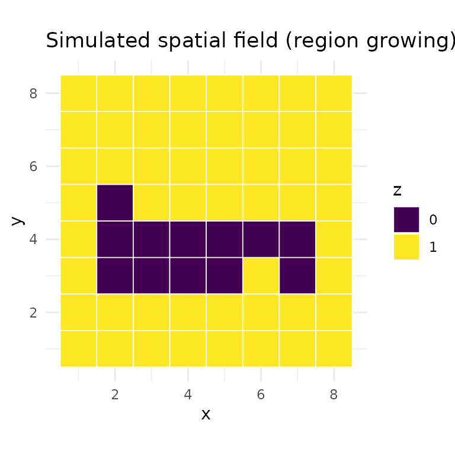
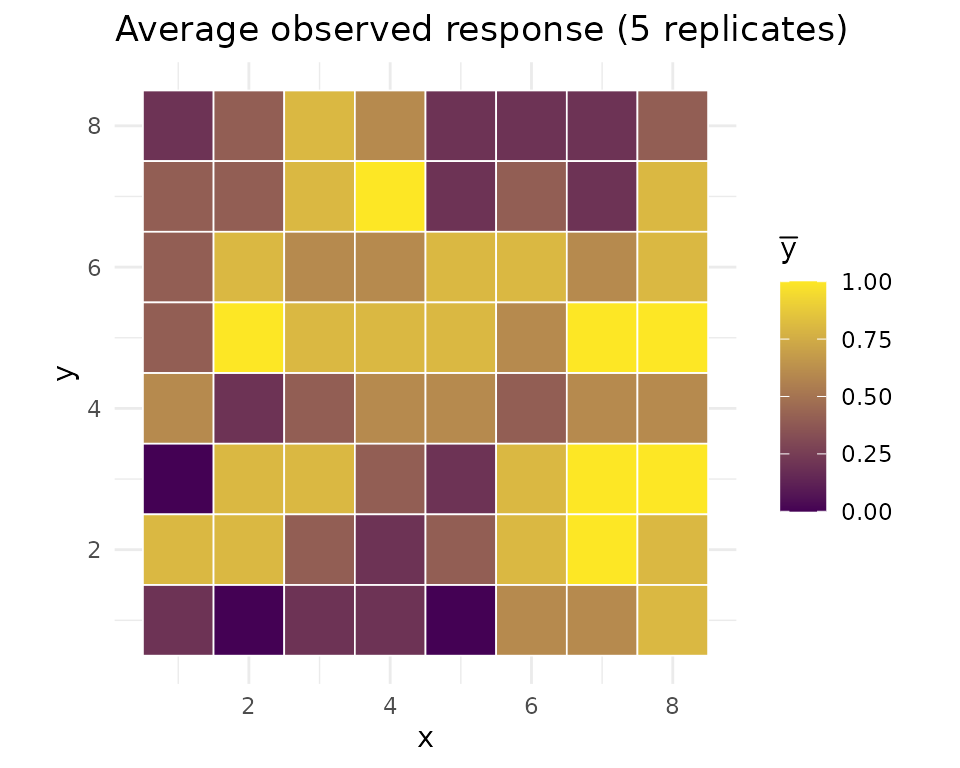
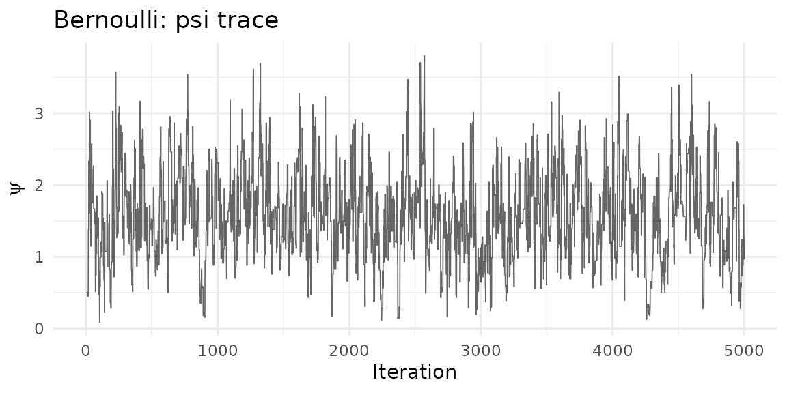
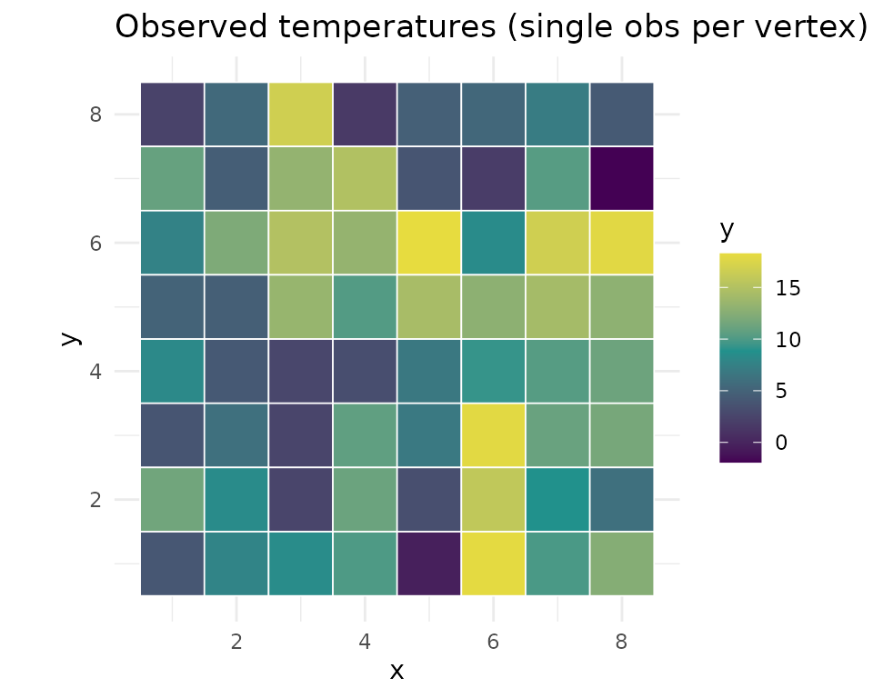
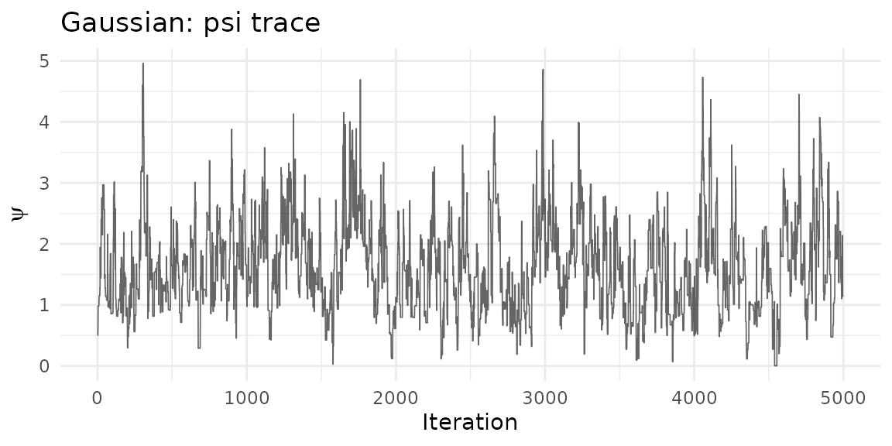
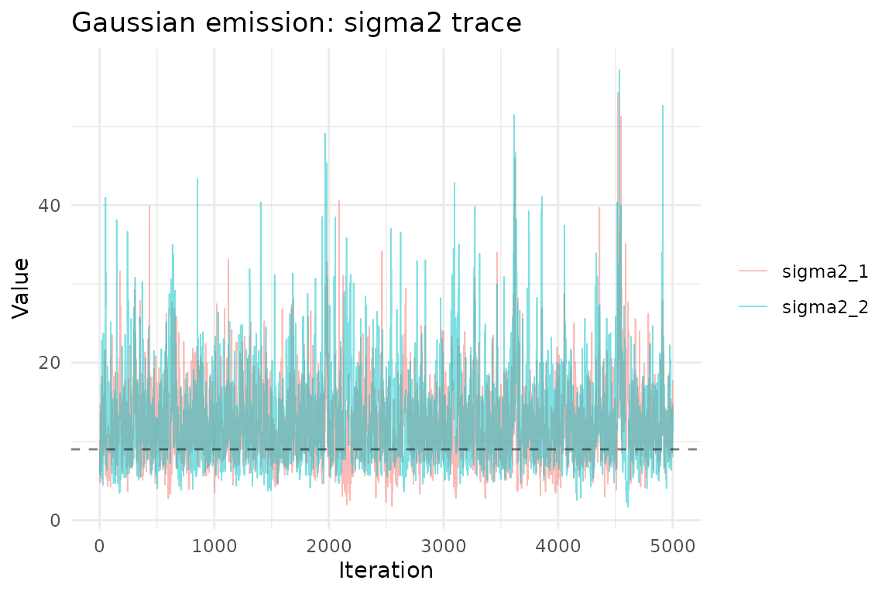
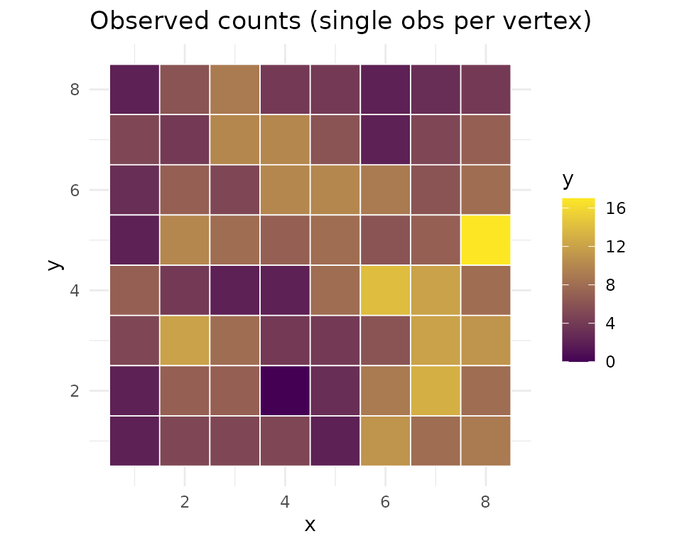
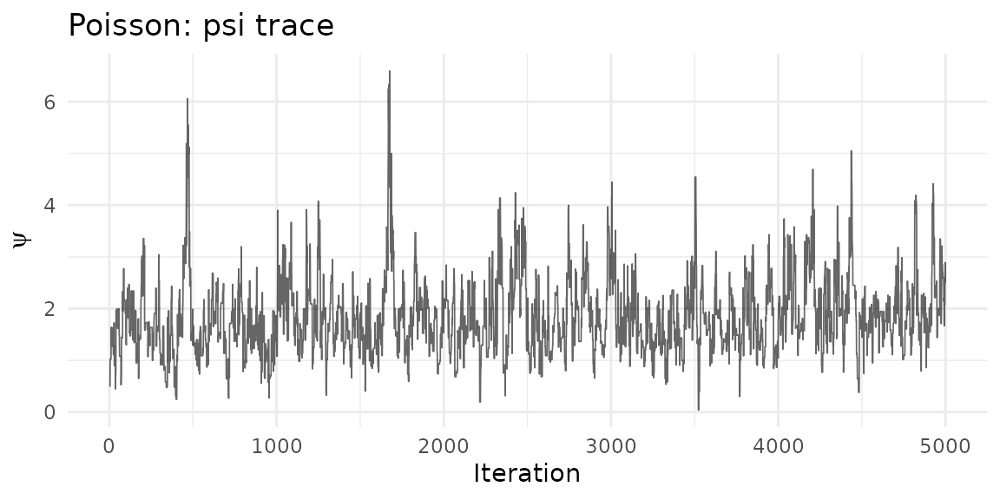

Overview
In a hierarchical MDGM, the spatial field is latent and observations are generated through an emission distribution. The mdgm package supports three emission families:
| Family | Observation type | Parameters | Prior |
|---|---|---|---|
| Bernoulli | Binary (0/1) | (success probability) | Beta |
| Gaussian | Continuous | , | Independent Normal, Inverse-Gamma |
| Poisson | Count | (rate) | Gamma |
All emission families enforce an identifiability constraint on their location parameters: (Bernoulli), (Gaussian), or (Poisson). This is achieved via truncated conjugate posterior sampling.
Simulating a spatial field
For the examples below we use a simple region-growing algorithm to generate irregular spatial clusters on a grid graph. Starting from random seed vertices, regions expand outward one cell at a time, producing blocky but asymmetric patterns:
grow_regions <- function(nug, n_colors, seed = NULL) {
if (!is.null(seed)) set.seed(seed)
n <- nug$nvertices()
z <- rep(NA_integer_, n)
# Plant one seed per color
seeds <- sample(n, n_colors)
for (k in seq_along(seeds)) z[seeds[k]] <- k - 1L
# Grow: repeatedly claim a random unclaimed neighbor
repeat {
boundary <- which(!is.na(z))
candidates <- integer(0)
for (v in boundary) {
nbrs <- nug$neighbors(v)
candidates <- c(candidates, nbrs[is.na(z[nbrs])])
}
candidates <- unique(candidates)
if (length(candidates) == 0) break
pick <- sample(candidates, 1)
claimed <- nug$neighbors(pick)
claimed <- claimed[!is.na(z[claimed])]
z[pick] <- z[sample(claimed, 1)]
}
z
}
nug <- nug_from_grid(8, 8, seed = 42L)
n <- nug$nvertices()
z_true <- grow_regions(nug, n_colors = 2, seed = 28)
grid_df <- data.frame(
x = rep(1:8, 8), y = rep(8:1, each = 8),
z = factor(z_true)
)
ggplot(grid_df, aes(x, y, fill = z)) +
geom_tile(color = "white", linewidth = 0.3) +
scale_fill_manual(values = c("0" = "#440154", "1" = "#fde725")) +
coord_equal() + theme_minimal() +
labs(title = "Simulated spatial field (region growing)", fill = "z")
Bernoulli emission
The Bernoulli emission models binary observations. Each vertex can have multiple replicate observations , each drawn independently from . Multiple replicates per vertex are needed for identifiability in the Bernoulli case.
Example: binary indicators on a grid
set.seed(1)
p_true <- c(0.3, 0.7)
# 5 replicate observations per vertex
y_bern <- lapply(seq_len(n), function(i) {
rbinom(5, 1, p_true[z_true[i] + 1])
})
# Visualize average response per vertex
obs_df_b <- data.frame(
x = rep(1:8, 8), y = rep(8:1, each = 8),
value = vapply(y_bern, mean, numeric(1))
)
ggplot(obs_df_b, aes(x, y, fill = value)) +
geom_tile(color = "white", linewidth = 0.3) +
scale_fill_gradient(low = "#440154", high = "#fde725") +
coord_equal() + theme_minimal() +
labs(title = "Average observed response (5 replicates)", fill = expression(bar(y)))
Fit the model:
model_b <- mdgm_model(nug, dag_type = "spanning_tree",
n_colors = 2L, emission = "bernoulli")
result_b <- mcmc(model_b, y = y_bern,
z_init = sample(0:1, n, replace = TRUE),
psi_init = 0.5,
theta_init = c(0.3, 0.7),
n_iter = 5000L,
psi_tune = 1.0,
seed = 42L,
nug = nug)
result_b$summary(burnin = 1000L)
#> MDGM MCMC Results
#> Vertices: 64, Colors: 2
#> Iterations: 5000 (burnin: 1000)
#> Psi acceptance rate: 0.390
#> Psi posterior mean: 1.5658 (sd: 0.6204)
#> Emission type: bernoulli
#> p_1 posterior mean: 0.3097 (sd: 0.0550)
#> p_2 posterior mean: 0.7461 (sd: 0.0425)
#> Diagnostics:
#> psi — R-hat: 0.9998, ESS: 204
#> p_1 — R-hat: 0.9998, ESS: 640
#> p_2 — R-hat: 1.0022, ESS: 599Posterior trace plots
psi_df_b <- data.frame(iteration = seq_along(result_b$psi()), psi = result_b$psi())
ggplot(psi_df_b, aes(iteration, psi)) +
geom_line(alpha = 0.6, linewidth = 0.3) +
theme_minimal() +
labs(title = "Bernoulli: psi trace", x = "Iteration", y = expression(psi))
ep_b <- result_b$emission_params()
n_iter <- ncol(ep_b$p)
p_df <- data.frame(
iteration = rep(seq_len(n_iter), 2),
value = c(ep_b$p[1, ], ep_b$p[2, ]),
parameter = rep(c("p_1", "p_2"), each = n_iter)
)
ggplot(p_df, aes(iteration, value, color = parameter)) +
geom_line(alpha = 0.5, linewidth = 0.3) +
geom_hline(yintercept = p_true, linetype = "dashed", alpha = 0.5) +
theme_minimal() +
labs(title = "Bernoulli emission: p trace",
x = "Iteration", y = "Value", color = NULL)
Gaussian emission
The Gaussian emission models continuous observations. Each observation is drawn from . A single observation per vertex is sufficient for identifiability.
The priors on and are independent: where is the prior variance for the mean.
Example: spatial temperature field
Here we use overlapping emission distributions — the two groups differ in mean but share similar spread, making classification rely on both the emission signal and the spatial structure:
set.seed(2)
mu_true <- c(5, 12)
sigma2_true <- c(9, 9)
# Single observation per vertex
y_gauss <- lapply(seq_len(n), function(i) {
rnorm(1, mu_true[z_true[i] + 1], sqrt(sigma2_true[z_true[i] + 1]))
})
# Visualize the observations
obs_df <- data.frame(
x = rep(1:8, 8), y = rep(8:1, each = 8),
value = vapply(y_gauss, `[`, numeric(1), 1)
)
ggplot(obs_df, aes(x, y, fill = value)) +
geom_tile(color = "white", linewidth = 0.3) +
scale_fill_gradient2(low = "#440154", mid = "#21918c", high = "#fde725",
midpoint = mean(obs_df$value)) +
coord_equal() + theme_minimal() +
labs(title = "Observed temperatures (single obs per vertex)", fill = "y")
Fit with Gaussian emission:
model_g <- mdgm_model(nug, dag_type = "spanning_tree",
n_colors = 2L, emission = "gaussian")
# theta_init: c(mu_1, mu_2, sigma2_1, sigma2_2)
result_g <- mcmc(model_g, y = y_gauss,
z_init = sample(0:1, n, replace = TRUE),
psi_init = 0.5,
theta_init = c(4, 14, 9, 9),
n_iter = 5000L,
psi_tune = 1.0,
seed = 42L,
nug = nug)
result_g$summary(burnin = 1000L)
#> MDGM MCMC Results
#> Vertices: 64, Colors: 2
#> Iterations: 5000 (burnin: 1000)
#> Psi acceptance rate: 0.379
#> Psi posterior mean: 1.6287 (sd: 0.7845)
#> Emission type: gaussian
#> mu_1 posterior mean: 5.5150 (sd: 0.9295)
#> mu_2 posterior mean: 12.8036 (sd: 1.0608)
#> sigma2_1 posterior mean: 11.7869 (sd: 4.7116)
#> sigma2_2 posterior mean: 12.8191 (sd: 5.9121)
#> Diagnostics:
#> psi — R-hat: 1.0025, ESS: 102
#> mu_1 — R-hat: 1.0008, ESS: 255
#> mu_2 — R-hat: 1.0012, ESS: 283
#> sigma2_1 — R-hat: 1.0010, ESS: 292
#> sigma2_2 — R-hat: 1.0001, ESS: 359Posterior trace plots
psi_df_g <- data.frame(iteration = seq_along(result_g$psi()), psi = result_g$psi())
ggplot(psi_df_g, aes(iteration, psi)) +
geom_line(alpha = 0.6, linewidth = 0.3) +
theme_minimal() +
labs(title = "Gaussian: psi trace", x = "Iteration", y = expression(psi))
ep_g <- result_g$emission_params()
n_iter_g <- ncol(ep_g$mu)
mu_df <- data.frame(
iteration = rep(seq_len(n_iter_g), 2),
value = c(ep_g$mu[1, ], ep_g$mu[2, ]),
parameter = rep(c("mu_1", "mu_2"), each = n_iter_g)
)
ggplot(mu_df, aes(iteration, value, color = parameter)) +
geom_line(alpha = 0.5, linewidth = 0.3) +
geom_hline(yintercept = mu_true, linetype = "dashed", alpha = 0.5) +
theme_minimal() +
labs(title = "Gaussian emission: mu trace",
x = "Iteration", y = "Value", color = NULL)
sigma2_df <- data.frame(
iteration = rep(seq_len(n_iter_g), 2),
value = c(ep_g$sigma2[1, ], ep_g$sigma2[2, ]),
parameter = rep(c("sigma2_1", "sigma2_2"), each = n_iter_g)
)
ggplot(sigma2_df, aes(iteration, value, color = parameter)) +
geom_line(alpha = 0.5, linewidth = 0.3) +
geom_hline(yintercept = sigma2_true, linetype = "dashed", alpha = 0.5) +
theme_minimal() +
labs(title = "Gaussian emission: sigma2 trace",
x = "Iteration", y = "Value", color = NULL)
Poisson emission
The Poisson emission models count data. Each observation is drawn from . As with the Gaussian case, a single observation per vertex is sufficient for identifiability.
The prior is a Gamma distribution: with rate parameterization (mean ).
Example: spatial species counts
We again use overlapping rates so that the spatial structure contributes meaningfully to classification:
set.seed(3)
lambda_true <- c(4, 10)
# Single count per vertex
y_pois <- lapply(seq_len(n), function(i) {
rpois(1, lambda_true[z_true[i] + 1])
})
obs_df_p <- data.frame(
x = rep(1:8, 8), y = rep(8:1, each = 8),
value = vapply(y_pois, `[`, numeric(1), 1)
)
ggplot(obs_df_p, aes(x, y, fill = value)) +
geom_tile(color = "white", linewidth = 0.3) +
scale_fill_gradient(low = "#440154", high = "#fde725") +
coord_equal() + theme_minimal() +
labs(title = "Observed counts (single obs per vertex)", fill = "y")
Fit with Poisson emission:
model_p <- mdgm_model(nug, dag_type = "spanning_tree",
n_colors = 2L, emission = "poisson")
result_p <- mcmc(model_p, y = y_pois,
z_init = sample(0:1, n, replace = TRUE),
psi_init = 0.5,
theta_init = c(3, 8),
n_iter = 5000L,
psi_tune = 1.0,
seed = 42L,
nug = nug)
result_p$summary(burnin = 1000L)
#> MDGM MCMC Results
#> Vertices: 64, Colors: 2
#> Iterations: 5000 (burnin: 1000)
#> Psi acceptance rate: 0.412
#> Psi posterior mean: 1.8797 (sd: 0.7296)
#> Emission type: poisson
#> lambda_1 posterior mean: 4.0756 (sd: 0.5852)
#> lambda_2 posterior mean: 9.0175 (sd: 0.7055)
#> Diagnostics:
#> psi — R-hat: 1.0000, ESS: 201
#> lambda_1 — R-hat: 1.0054, ESS: 246
#> lambda_2 — R-hat: 1.0080, ESS: 390Posterior trace plots
psi_df_p <- data.frame(iteration = seq_along(result_p$psi()), psi = result_p$psi())
ggplot(psi_df_p, aes(iteration, psi)) +
geom_line(alpha = 0.6, linewidth = 0.3) +
theme_minimal() +
labs(title = "Poisson: psi trace", x = "Iteration", y = expression(psi))
ep_p <- result_p$emission_params()
n_iter_p <- ncol(ep_p$lambda)
lambda_df <- data.frame(
iteration = rep(seq_len(n_iter_p), 2),
value = c(ep_p$lambda[1, ], ep_p$lambda[2, ]),
parameter = rep(c("lambda_1", "lambda_2"), each = n_iter_p)
)
ggplot(lambda_df, aes(iteration, value, color = parameter)) +
geom_line(alpha = 0.5, linewidth = 0.3) +
geom_hline(yintercept = lambda_true, linetype = "dashed", alpha = 0.5) +
theme_minimal() +
labs(title = "Poisson emission: lambda trace",
x = "Iteration", y = "Value", color = NULL)
Comparing latent field recovery
For all three emission types, the posterior mode of the latent field should recover the true spatial pattern:
burnin <- 1000L
recover_field <- function(result, burnin) {
z_post <- result$z()
z_burn <- z_post[, (burnin + 1):ncol(z_post)]
apply(z_burn, 1, function(row) {
tbl <- tabulate(row + 1L, nbins = 2)
which.max(tbl) - 1L
})
}
z_mode_b <- recover_field(result_b, burnin)
z_mode_g <- recover_field(result_g, burnin)
z_mode_p <- recover_field(result_p, burnin)
field_df <- data.frame(
x = rep(rep(1:8, 8), 4),
y = rep(rep(8:1, each = 8), 4),
value = c(z_true, z_mode_b, z_mode_g, z_mode_p),
panel = rep(c("True field", "Bernoulli", "Gaussian", "Poisson"),
each = n)
)
field_df$panel <- factor(field_df$panel,
levels = c("True field", "Bernoulli",
"Gaussian", "Poisson"))
ggplot(field_df, aes(x, y, fill = factor(value))) +
geom_tile(color = "white", linewidth = 0.2) +
scale_fill_manual(values = c("0" = "#440154", "1" = "#fde725")) +
coord_equal() +
facet_wrap(~panel, nrow = 1) +
theme_minimal() +
labs(fill = "z")
Choosing an emission family
| Scenario | Recommended emission |
|---|---|
| Binary outcomes (presence/absence, success/failure) | "bernoulli" |
| Continuous measurements (temperature, concentration) | "gaussian" |
| Count data (species counts, event counts) | "poisson" |
Prior tuning tips
-
Bernoulli
c(a, b): Usec(1, 1)(uniform) as a default. Increaseaandbto shrink toward 0.5 if you expect weak signal. -
Gaussian
c(mu_0, sigma2_0, alpha_0, beta_0): Setmu_0near the data mean,sigma2_0large (e.g., 10000) for a vague location prior, andalpha_0 = 2,beta_0near the expected variance for a weakly informative scale prior. -
Poisson
c(alpha_0, beta_0): The prior mean isalpha_0 / beta_0. Usec(1, 0.1)for a diffuse prior with mean 10, or match to the expected count range.